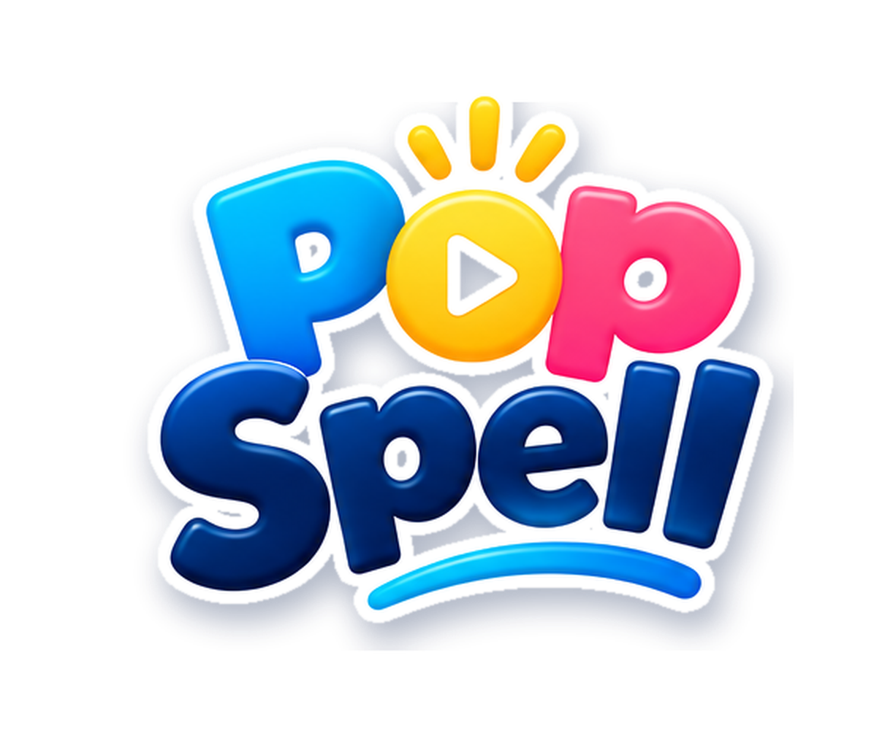
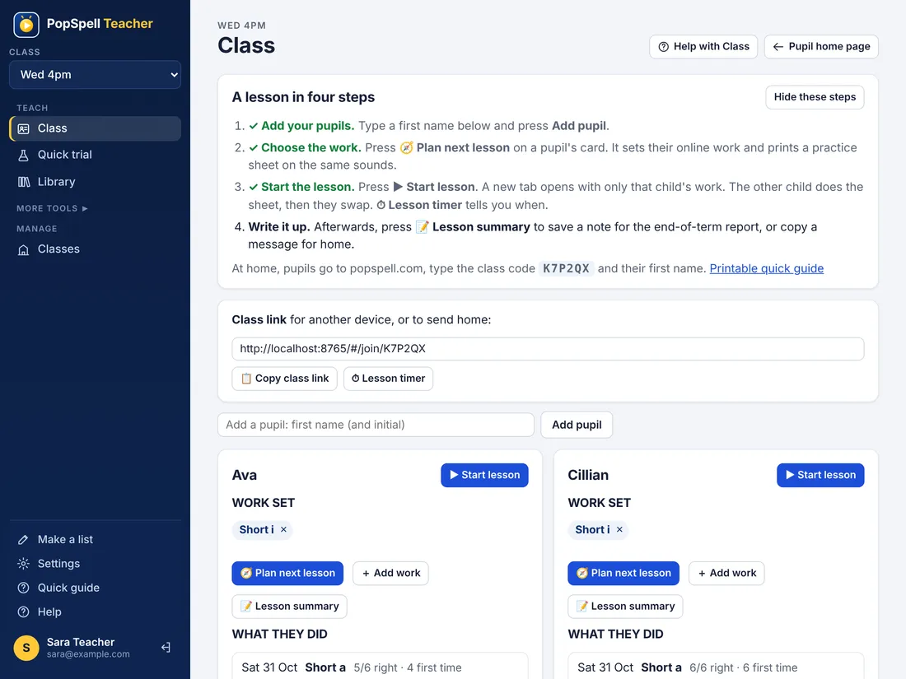
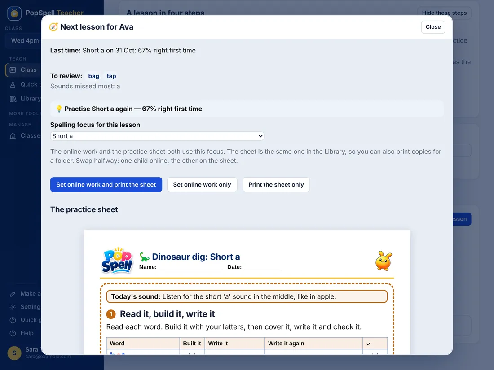
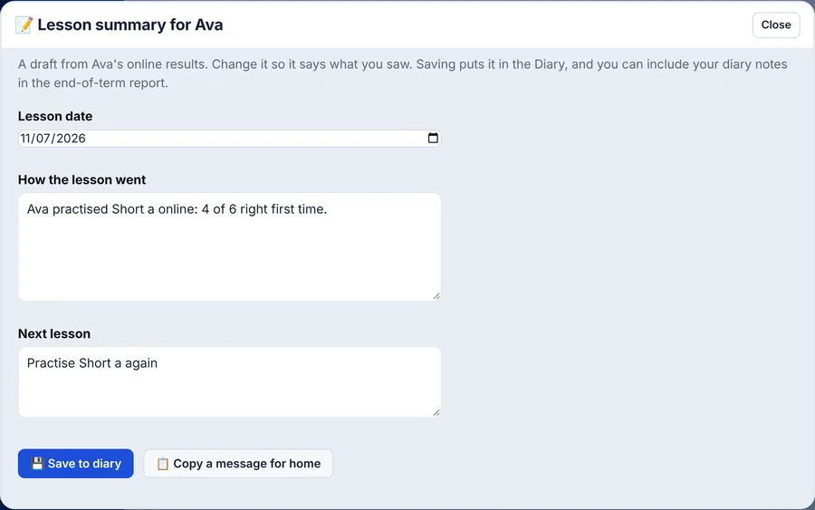

Quick guide: a lesson, step by step
For a small group on one laptop: one child online, one on a practice sheet, then swap.
Sign in and open your class
Go to popspell.com/#/teacher (bookmark it) and sign in with Google. You land on the Class page. The first time, type a name for the group (e.g. Wed 4pm) and press ＋ Make class.

Add your pupils (once)
Type a first name in Add a pupil and press Add pupil. That's all a child needs to sign in: the class code and their first name. PINs are optional.
Choose the work
On a pupil's card press 🧭 Plan next lesson. It shows last time's score and suggests a spelling focus. Set online work and print the sheet does both, on the same sounds.

Start the lesson
Press ▶ Start lesson on the card of the child going online first. A new tab opens with only their work. Give the other child the sheet. ⏱ Lesson timer (on your phone or your own tab) chimes when it's time to swap; then press ▶ Start lesson for the second child. Finished early? 🎮 Fill time on their card opens a game that suits them.
See how they did
Come back to the Class page: it updates itself. Under What they did, press a result to see every word: first go, after a few tries, or not yet, and the sounds missed.
Write it up
Press 📝 Lesson summary. PopSpell drafts a note from their online work. Change it to say what you saw, then 💾 Save to diary (it can go into the end-of-term report) or 📋 Copy a message for home.

Good to know
- Homework: at home the child goes to popspell.com, types the class code (on the Class page) and their first name, and sees the same work.
- Just a sheet? Open Library, search (e.g. short i) and press 🖨️ Print. Untick any sheet you don't want: only the ticked ones print. ☆ Save keeps it in ⭐ My folder on that computer.
- A child trying PopSpell for the first time? Quick trial needs no class or login.
- The rest (reports, programme, diary, parent pages) is under More tools in the menu. You don't need it for a normal lesson.
Pictures show a demo class with made-up pupils. Full instructions: Teacher help ·